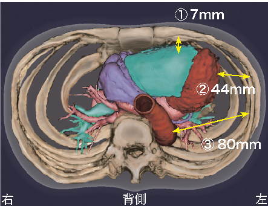
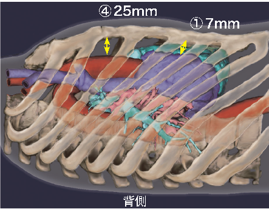
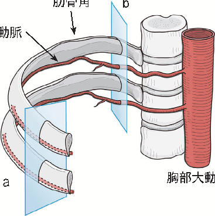
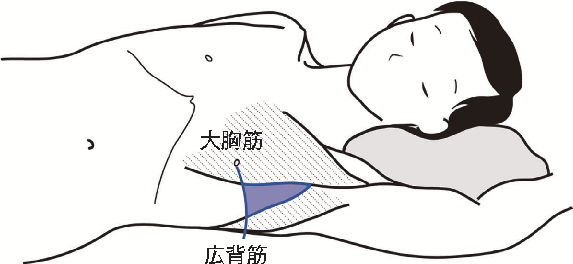
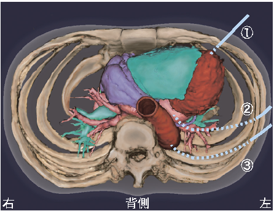
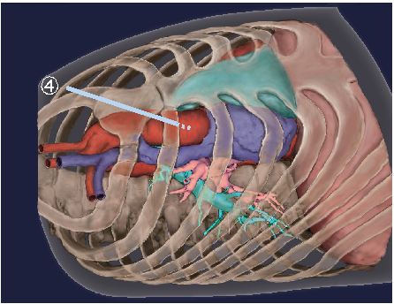
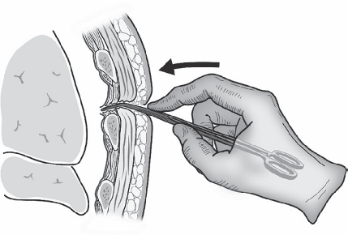
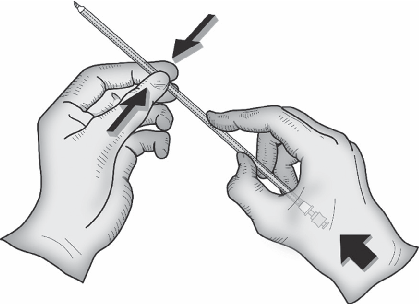
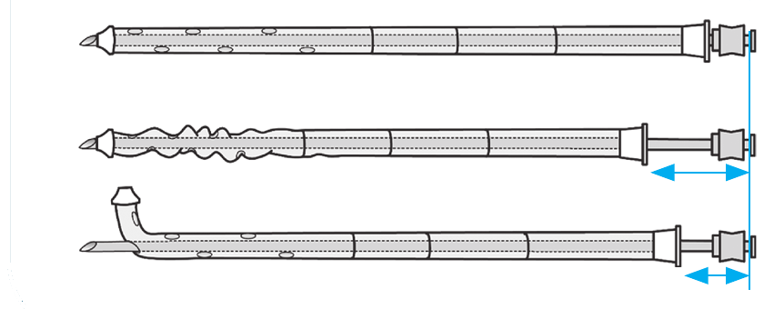

胸腔穿刺は診断のための検体採取から緊急処置まで適応が広く、多くの診療科で日常的に行われる手技である。しかし胸腔内には肺・心臓・大血管といった生命維持に直結する臓器があり、穿刺器具の先端を直視できないまま処置を行うため、誤穿刺すれば致命的となりうる。
本ページは、医療事故調査・支援センター（日本医療安全調査機構）が公表した「医療事故の再発防止に向けた提言 第12号 — 胸腔穿刺に係る死亡事例の分析」（2020年11月）をもとに、研修医・ICU医が「死亡に至る事態を回避する」ために知っておくべき要点をまとめたもの。対象は、医療事故調査制度に報告された9例の死亡事例である。学会のガイドラインとは異なり、再発防止の視点で書かれた提言である点に留意する。
2015年10月〜2020年4月にセンターへ報告された院内調査結果報告書1,408件のうち、胸腔穿刺に関連する死亡は10例。うち死亡の契機が不明な1例を除いた9例を分析対象とした。損傷部位は大きく2系統に分かれる。
心臓・大血管損傷の5例の内訳は、心臓損傷3例（左心室2例・左心房1例）、上行大動脈1例、下行大動脈1例。残る1例は高度の皮下気腫・縦隔気腫による換気障害であった。また9例中4例が抗血栓療法中、1例に血液凝固障害があった。
| 事例 | 損傷部位 | 死因 | 抗血栓 | 穿刺部位 | 致命的事象の時相 |
|---|---|---|---|---|---|
| 1 | 心臓（左心室） | 出血性ショック | ○ | 左第5肋間 前腋窩線 | 穿刺中（血性約800→2,000mL）→当日死亡 |
| 2 | 心臓（左心室） | 出血性ショック | — | 左第6肋間 前腋窩線 | 穿刺中（血性約400mL）→当日死亡 |
| 3 | 心臓（左心房） | 出血性ショック | — | 左第5肋間 中腋窩線 | 穿刺中（拍動性血性→心タンポナーデ）→当日死亡 |
| 4 | 下行大動脈 | 出血性ショック | ○ | 左第6肋間 後腋窩線 | 穿刺中（血性約800→2,000mL以上）→当日死亡 |
| 5 | 上行大動脈 | 心タンポナーデ／出血性ショック | — | 右第2肋間 胸骨右縁 | 穿刺中（血性わずか約5mL→心タンポナーデ）→約2週後死亡 |
| 6 | 肋間動脈 | 出血性ショック | ○ | 右第11肋間 背側 | 穿刺終了 約2時間後に血圧低下→当日死亡 |
| 7 | 肋間動脈（疑い） | 出血性ショック | ○ | 右肋間 | 穿刺終了 約8時間後に血圧低下→翌日死亡 |
| 8 | 肋間動脈 | 出血性ショック／喀血による窒息 | — | 右第9肋間 背側 | 約2週間後のカテーテル抜去直後に動脈性出血→当日死亡 |
| 9 | 皮下気腫・縦隔気腫 | 換気障害 | — | 左肋間 | 穿刺後 進行性に皮下気腫拡大→翌日死亡 |
体外へ排出された血性排液がわずか約5mLでも、心嚢内であれば急性心タンポナーデを発症しうる（事例5）。「出てきた血液量が少ない＝安全」ではない点に注意する。
胸腔穿刺は解剖学的な位置関係から、肺・肝・脾への誤穿刺だけでなく、致命的になりうる上下大静脈・右心房・右心室・肺動脈・左心房・左心室・上行/弓部/下行大動脈の全てに誤穿刺のリスクがある。胸郭から心臓・大血管までの距離は、体格によるものの予想以上に近い。


身長157cm・体重45kg・BSA 1.40m²・心拡大のない女性の一例では、①胸郭から右心室まで7mm、②前腋窩線から左心室まで44mm（直線距離）、③後腋窩線から胸部下行大動脈まで80mm、④胸骨から上行大動脈まで25mmであった。
特に左側の穿刺は右側と異なり、心臓までの距離が近く胸部下行大動脈が存在することを念頭に、穿刺部位・角度・深さを検討する。実際、心臓・大血管損傷5例のうち左心室・左心房・下行大動脈の4例は左側からの穿刺であった。
肋間動脈は肋間静脈・神経とともに、肋骨下縁の肋骨溝内を走行する。しかし肋骨角より正中寄り（背側）では肋間隙のなかを走行し、さらに下枝が肋間隙を前下方へ向かうため、肋骨上縁を狙っても肋間動脈を損傷するリスクがある。背側からの穿刺で肋間動脈損傷をきたした事例があった。

胸腔穿刺は解剖学的な位置関係から心臓・大血管などを穿刺するリスクを有する。少量の胸水や限局した膿胸を穿刺する場合には致命的合併症の危険性が高まる。これらの患者個別のリスク情報を、医療従事者間であらかじめ共有する。
心臓・大血管への穿刺を避けるため、穿刺前に穿刺部位・角度・深さを検討する。CT画像や超音波画像で、事前に臓器と胸水貯留部位の位置関係を確認することが望ましい。対象事例では穿刺前確認をCTで4例・X線で4例に行い、穿刺時に超音波を使用したのは7例であった。
特に次の所見は通常と解剖学的位置がずれ、誤穿刺リスクとなる。対象事例では心拡大3例・心臓術後3例・胸膜癒着疑い2例・肺切除後の縦隔偏位1例が確認された。
穿刺体位はCT撮影時と体位が異なる（腕の挙上など）ため、画像と穿刺時の臓器位置の変化を考慮する。聴診・打診だけでなく、直前の超音波で胸水の量・幅・性状、胸膜癒着の有無、壁側胸膜までの距離を確認し、最終的な穿刺部位と方向を決める。
穿刺部位の選択と safe triangle一般的に、気胸では第2肋間鎖骨中線や第4〜5肋間中腋窩線・前腋窩線、胸水では第4〜6肋間中腋窩線が選択される。BTSガイドライン（2003年）では「safe triangle」（広背筋前縁・大胸筋外側縁・乳頭の水平面より上方かつ腋窩より下方で囲まれた部位）が穿刺に適するとされるが、安全が保証されているわけではない。



対象事例の誤穿刺経路：① 左第5・6肋間前腋窩線→左心室、② 左第5肋間中腋窩線→左心房、③ 左第6肋間後腋窩線→下行大動脈、④ 右第2肋間胸骨右縁3横指外側→上行大動脈。
胸腔に至る経路を作り、予定した深さ以上に進まないように内套針・カテーテルを把持する。内套針は壁側胸膜を越えてからは胸腔内を進めない。ただし結果として想定以上に深く進んでいる場合もある。予定した深さに達しても排液がない場合は、いったん手を止め、穿刺部位・角度・距離を再検討する。


太い径のカテーテル：皮膚切開を置き鉗子で皮下・筋層を剥離して経路を作り、最後の壁側胸膜はブレーキをかけつつ穿破。穿破部に鉗子を浅めに入れて拡大し、そこにカテーテルを優しく「置く」。内套針を使わず先端側孔を鉗子で挟んで置く方法や、内套針の先端をカテーテル先端より数cm浅くして置く方法もある。
細い径のカテーテル：肋骨付近まで鉗子で経路を作るのが有効。直接穿刺・挿入が可能で侵襲は少ないが、先端が鋭利で想定以上に深く入りうる。予定した深さ・角度でそれ以上進まないよう、内套針とともにカテーテルをしっかり握ってストッパーとする。

対象事例では、術者の想定以上の深さに内套針・カテーテルが進んでいた5例が心臓・大血管損傷に至っていた。うち3例は「予定の深さで排液・排気がない」「経路作成後にカテーテルが胸腔内に入らない」状況から、さらに進めてしまったことが確認された。
排液が血性で、病状による血性排液か臓器損傷によるものか判断に迷う場合は、まずカテーテルをクランプし、心臓・大血管損傷を念頭に置いて対応する。心臓・大血管穿刺に至った5例はいずれも血性排液を認めていた。術後で血性排液が想定された事例や、体外への排液は少量でも心タンポナーデに至った事例があり、判断は容易ではない。
胸腔内出血で循環血液量減少性ショック、心嚢内血液貯留で心タンポナーデ（閉塞性ショック）となり、短時間で心停止に至る。損傷5例は全例緊急開胸手術を実施した。
胸腔穿刺後も継続して患者を観察し、血圧低下・呼吸促迫や呼吸困難・皮下気腫の拡大がみられたら、肋間動脈損傷などによる出血、気胸、縦隔気腫といった合併症を疑い速やかに対応する。
肋間動脈損傷（疑い含む）3例と換気障害1例は、穿刺終了数時間後やカテーテル抜去直後から症状が出現した。症状出現までの時間はさまざまで、経時的な観察が不可欠である。
皮下気腫・縦隔気腫は気胸や胸腔穿刺で少なからず生じるが、多くは呼吸循環に影響しないため危険性が見過ごされやすい。しかし進行性に悪化し患者が呼吸困難を訴える場合は、気道狭窄・拘束性換気障害・循環不全をきたしうる。呼吸器外科・麻酔科・救急科に相談し、追加ドレナージや皮膚切開部の再縫合で進行を抑える。事例9では穿刺直後の皮下気腫・気胸が顔面・頚部・前胸部・背部へ進行し、翌日死亡に至った。
出典：医療事故調査・支援センター（一般社団法人 日本医療安全調査機構）「医療事故の再発防止に向けた提言 第12号 — 胸腔穿刺に係る死亡事例の分析」（2020年11月）。本ページは同提言書をもとに研修医・ICU医向けに要点を整理した教育用サマリーです。実際の手技・対応は指導医の指示および原典提言書を参照してください。
制作：ICU 関谷